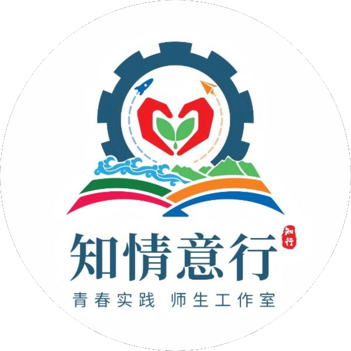

01
知芽工作部
负责团队制度与档案管理、会议与内建统筹、财务与物资管理等，负责后勤保障，充当信息中转站，确保各部门间指令与汇报的畅通无阻。
适合：认真细致、责任心强，愿意把事情安排清楚的人。
Search / 站内搜索
按 Esc 关闭 · Ctrl / ⌘ + K 快速打开
02 / 关于知情意行
汇聚成员档案与实践足迹，让每一段青春实践都有迹可循。 从工作室介绍、五个部门，到团队任务与过往日志，这里是一份完整的自我说明。

知情意行青春实践师生工作室是一支关注乡土文化、教育支持与数字技术的青年团队。 我们不把实践当成一次性的活动，而是把它当成一个可以持续生长的项目： 先进入现场，理解真实问题；再和教师、社区伙伴一起设计课程、影像或技术方案； 最后把过程沉淀成作品，留给下一次使用。
从现场问题出发，不用想象代替调研，不把实践地当成背景板。
不是“我们去帮助别人”，而是和对方一起做，彼此都发生改变。
课程、诗集、影像、3D 档案或开源工具，让一次实践可以被继续使用。
部门介绍 / Departments
从档案与后勤、品牌传播、思想引领，到项目执行与研发，每个部门负责一段，又共同完成一个项目。
负责团队制度与档案管理、会议与内建统筹、财务与物资管理等，负责后勤保障，充当信息中转站，确保各部门间指令与汇报的畅通无阻。
适合：认真细致、责任心强，愿意把事情安排清楚的人。
负责品牌视觉设计、全媒体平台运营、宣传内容的创作与传播，产出高质量内容，打造有影响力的新媒体矩阵。
适合：喜欢写作、拍摄、剪辑、设计，或愿意学习宣传表达的人。
负责思想引领，以党建带团建，党团联络与建设、校内外战略合作拓展、特色项目孵化与战略政策研究等，致力于以先锋模范行动开展各类综合实践，服务国家战略。
适合：喜欢表达，也愿意倾听，对青年交流有兴趣的人。
负责活动项目策划、对外实践的联络合作、项目落地执行与过程化管理、志愿者人力资源库管理建设等，全面负责项目现场组织、协调与安全管理工作，不断激发团队执行力。
适合：真诚、耐心、有责任感，愿意走进服务现场的人。
负责科研项目研发与体系构建、大学生第二课堂建设与内容革新、教学资源开发与教育产品的创新、创新创业项目与科技竞赛迭代等，以赛促学，以赛促研，深化项目内核，孵化创新创业团队。
适合：喜欢调查分析、追问问题，也希望把专业真正用在现场的人。
团队与任务 / Team & Tasks
指导老师、核心团队、部门负责人和成员按项目协作。每个角色都对应真实任务，不做“只挂名”的分工。
姓名与简介待补充。负责方向把关、项目指导与对外内容终审。
成员信息待补充。负责项目统筹、内容编辑、视觉与技术实现。
五个部门各设负责人，负责计划、排期、协作与复盘。
按项目加入课程、影像、研究、运营或技术小组，保留历史贡献。
选题、采写、编辑、公众号与站内更新，维护内容池与发布节奏。
封面、摄影、剪辑、展览与 IP 应用，让内容被看见。
网站、工具、3D、数据整理与开源维护，把重复劳动变成工具。
对接、排期、志愿者协调、现场组织与复盘，让项目真正跑起来。
过往荣誉 / Honors
按年份整理，能关联项目的就带上项目链接。荣誉不是终点，它应该能回到具体的实践。
颁发机构待补充 · 关联项目待补充
示例条目颁发机构待补充 · 关联项目待补充
示例条目颁发机构待补充 · 关联项目待补充
示例条目